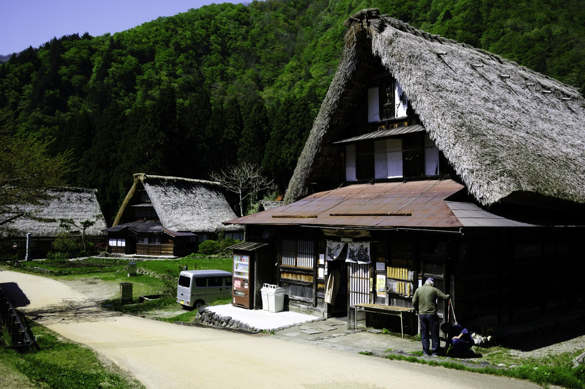
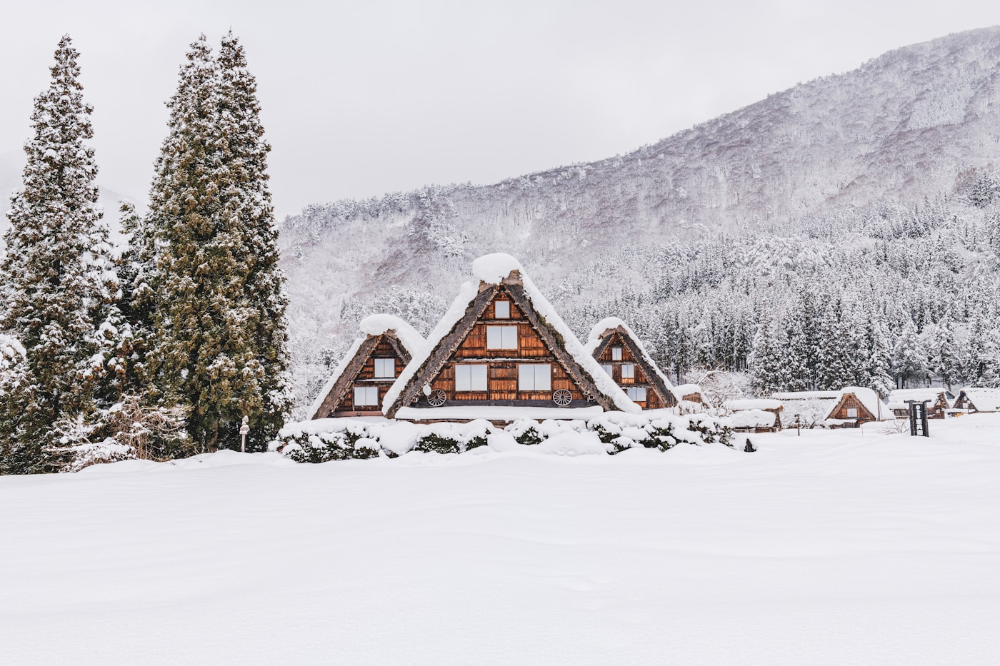
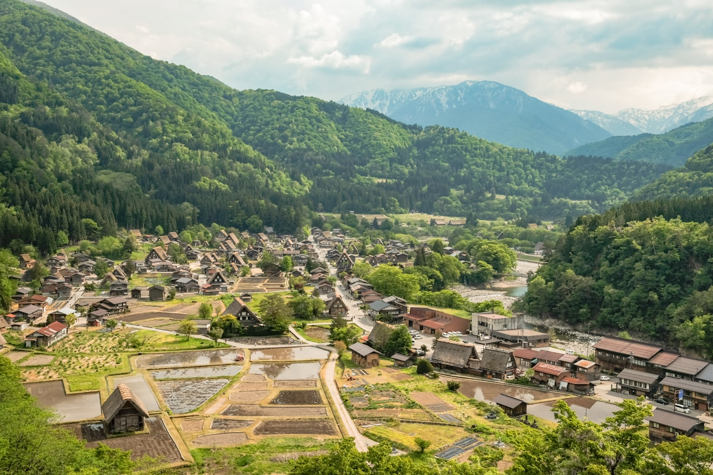
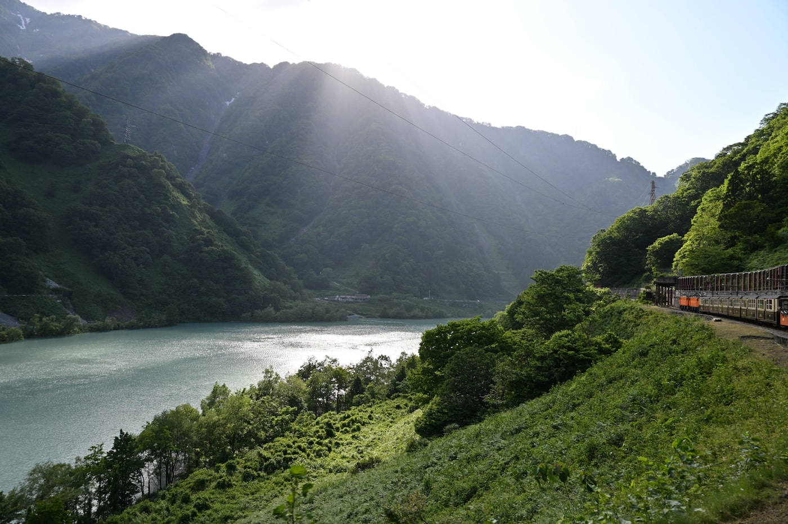

Registration
Registration for TiS 2027 follows the 36th ISTS process. Fees, categories, and deadlines will be provided through 36th ISTS.
Registration Status
Participant categories, fees, and deadlines will be provided through the 36th ISTS website. TiS participants register via the same 36th ISTS process.
36th ISTS Registration ↗Visa Information
Participants needing a visa invitation letter should contact the organizing committee via 36th ISTS channels. Japan entry requirements vary by nationality — consult your nearest Japanese embassy or consulate well in advance.
Venue & Travel
Toyama International Conference Center — 1-2 Ote-machi, Toyama City, Toyama 930-0084, Japan.

Gokayama village (Nanto, Toyama) · kai muro / Unsplash

Gokayama in winter · Hyungman Jeon / Unsplash
Toyama Alps · Preston Pham / Unsplash

Gokayama rice paddies · Rap Dela Rea / Unsplash

Getting Here from Tokyo
Haneda (HND) — ~35 min to Tokyo Station by rail or airport bus. Narita (NRT) — ~60 min by Narita Express.
Board the Kagayaki or Hakutaka at Tokyo Station. Direct to Toyama Station in ~2 h 10 min.
15 min walk · 7 min tram (Kokusai-kaigijo-mae) · 5 min taxi to Toyama International Conference Center.
Domestic access
By rail, the Hokuriku Shinkansen connects Tokyo Station and Toyama Station in about 2 h 10 min. From Osaka or Kyoto, participants usually transfer via Kanazawa or Tsuruga depending on the route and timetable.
Accommodation
Hotel recommendations and any room block arrangements will be published through the 36th ISTS website. Toyama city centre has several business hotels within walking distance of the venue.